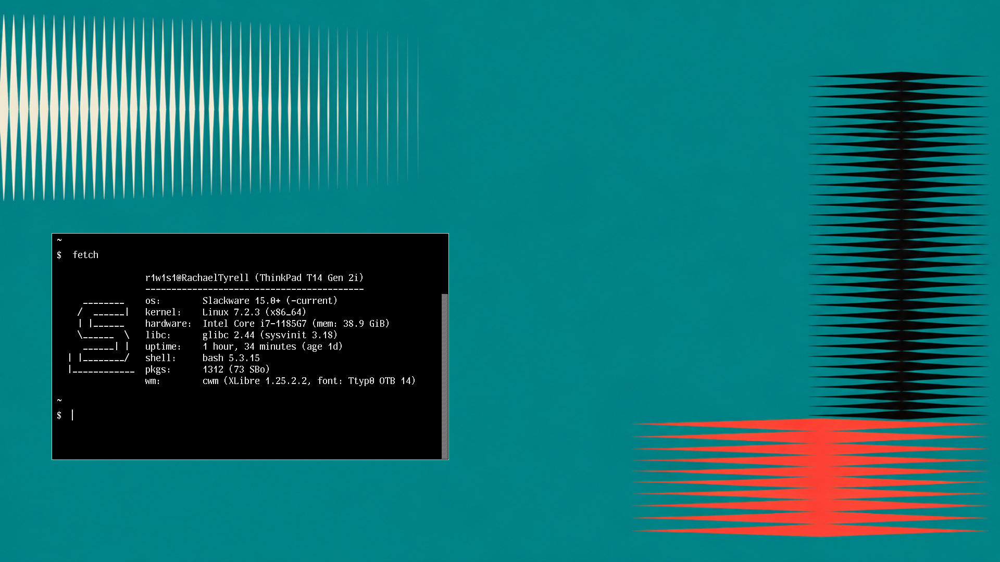

Calm Window Manager
A keyboard-driven X11 workflow for CWM on Slackware Linux, with configuration files, shell helpers, references and a curated desktop showcase.

The idea
CWM handles focus, groups, movement, resizing and window appearance. Small shell helpers provide launching, screenshots, audio, brightness and other desktop actions.
The setup is practical rather than turnkey: copy the pieces that fit your own X11 workflow.